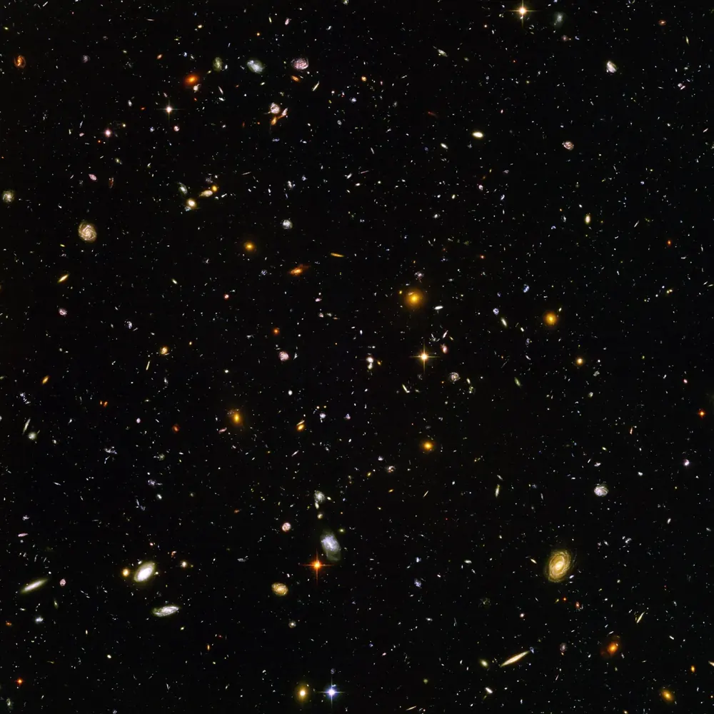

Timeline of the universeब्रह्मांड की समयरेखाLínea de tiempo del universoLinha do tempo do universoChronologie de l’universالخط الزمني للكون
The universe is 13.8 billion years old. Squeeze all of it into one calendar year, with the Big Bang at midnight on 1 January, and see when things happen.ब्रह्मांड 13.8 अरब साल पुराना है। उस सारे समय को एक कैलेंडर वर्ष में दबाइए, 1 जनवरी की आधी रात को Big Bang के साथ, और देखिए चीज़ें कब होती हैं।
The Big BangBig BangEl Big BangO Big BangLe Big Bangالانفجار العظيم
Space, time and all the matter and energy we know begin as an extremely hot, dense state and start to expand.अंतरिक्ष, समय और हमारी जानी हुई सारी पदार्थ और ऊर्जा एक अत्यंत गर्म और घने रूप में शुरू होकर फैलना शुरू करते हैं।
First atoms, first lightपहले परमाणु, पहली रोशनीLos primeros átomos, la primera luzOs primeiros átomos, a primeira luzPremiers atomes, première lumièreأولى الذرات وأول ضوء
The universe cools enough for atoms to form and light travels free. That light is still around as the cosmic microwave background.ब्रह्मांड इतना ठंडा होता है कि परमाणु बनें और रोशनी आज़ादी से चले। वही रोशनी आज cosmic microwave background के रूप में मौजूद है।
The first starsपहले तारेLas primeras estrellasAs primeiras estrelasLes premières étoilesأولى النجوم
Gas collapses into the first giant stars, which light up the dark universe.गैस ढहकर पहले दानव तारे बनाती है, जो अँधेरे ब्रह्मांड को रोशन करते हैं।
The first galaxiesपहली galaxiesLas primeras galaxiasAs primeiras galáxiasLes premières galaxiesأولى المجرات
The James Webb Space Telescope sees galaxies from this time.James Webb Space Telescope इस समय की galaxies देखता है।El telescopio espacial James Webb ve galaxias de esta época.O Telescópio Espacial James Webb vê galáxias dessa época.Le télescope spatial James Webb observe des galaxies de cette époque.يرصد تلسكوب جيمس ويب الفضائي مجرات من هذه الفترة.
The Sun and planets formसूरज और ग्रह बनते हैंSe forman el Sol y los planetasO Sol e os planetas se formamLe Soleil et les planètes se formentتتشكل الشمس والكواكب
A cloud of gas collapses 4.57 billion years ago and makes the Sun and the planets, including Earth.4.57 अरब साल पहले गैस का बादल ढहकर सूरज और पृथ्वी समेत ग्रह बनाता है।
The first lifeपहला जीवनLa primera vidaA primeira vidaLa première vieأولى صور الحياة
The earliest known traces of life on Earth, simple microbes, are about 3.5 billion years old.पृथ्वी पर जीवन के सबसे पुराने ज्ञात निशान, साधारण सूक्ष्मजीव, लगभग 3.5 अरब साल पुराने हैं।
Oxygen fills the airहवा में oxygenEl oxígeno llena el aireO oxigênio enche o arL’oxygène emplit l’airالأكسجين يملأ الهواء
Photosynthesis raises oxygen in the atmosphere about 2.4 billion years ago.लगभग 2.4 अरब साल पहले photosynthesis वायुमंडल में oxygen बढ़ाता है।
Animals multiplyजानवर तेज़ी से बढ़ते हैंLos animales se multiplicanOs animais se multiplicamLes animaux se multiplientتكاثر الحيوانات
About 540 million years ago most major animal groups appear in the Cambrian explosion.लगभग 54 करोड़ साल पहले Cambrian explosion में ज़्यादातर बड़े जंतु समूह दिखते हैं।
The dinosaurs endडायनासोर का अंतTerminan los dinosauriosOs dinossauros desaparecemLa fin des dinosauresنهاية الديناصورات
An asteroid hits Earth 66 million years ago and most dinosaurs die out.66 मिलियन साल पहले एक क्षुद्रग्रह पृथ्वी से टकराता है और ज़्यादातर डायनासोर ख़त्म हो जाते हैं।
Homo sapiensHomo sapiensHomo sapiensHomo sapiensHomo sapiensالإنسان العاقل
Modern humans appear about 300,000 years ago.आधुनिक मानव लगभग 3,00,000 साल पहले दिखते हैं।Los humanos modernos aparecen hace unos 300.000 años.Os humanos modernos surgem há cerca de 300.000 anos.Les humains modernes apparaissent il y a environ 300 000 ans.ظهر البشر المعاصرون قبل نحو 300,000 سنة.
WritingलेखनLa escrituraA escritaL’écritureالكتابة
The first writing, about 5,000 years ago. All of recorded history is in the last seconds.पहला लेखन, लगभग 5,000 साल पहले। पूरा लिखित इतिहास आख़िरी कुछ सेकंडों में है।
Dates are worked out as years after the Big Bang ÷ 13.8 billion × one year. Ages of early events are estimates and are still being refined.तारीख़ें इस तरह निकाली गई हैं: Big Bang के बाद के साल ÷ 13.8 अरब × एक साल। शुरुआती घटनाओं की उम्र अनुमान हैं और उन पर काम जारी है।
What comes nextआगे क्या होगाLo que vieneO que vem a seguirLa suiteما يأتي بعد ذلك
The Sun will be bright enough to boil away Earth’s oceans. Estimates range from 0.9 to 1.5 billion years.सूर्य इतना चमकीला हो जाएगा कि पृथ्वी के महासागर भाप बन जाएँगे। अनुमान 0.9 से 1.5 अरब साल के बीच हैं।
The Sun runs out of hydrogen in its core, swells into a red giant, then shrinks to a white dwarf.सूर्य के केंद्र की हाइड्रोजन ख़त्म होती है, वह फूलकर red giant बनता है और फिर सिकुड़कर white dwarf।
The Milky Way may merge with Andromeda. A 2025 study gives it about even odds within 10 billion years, so it is not certain.आकाशगंगा Andromeda से मिल सकती है। 2025 के एक अध्ययन के अनुसार 10 अरब साल के भीतर इसकी संभावना लगभग आधी है, इसलिए यह पक्का नहीं है।
The last stars burn out. After that, only dark remnants remain.आख़िरी तारे बुझ जाते हैं। उसके बाद सिर्फ़ अँधेरे अवशेष बचते हैं।
Even the largest black holes would have evaporated through Hawking radiation, if the theory is right.अगर सिद्धांत सही है तो सबसे बड़े ब्लैक होल भी Hawking radiation से भाप बनकर ख़त्म हो चुके होंगे।
Future dates are predictions from current physics and may change.भविष्य की तारीख़ें मौजूदा भौतिकी की भविष्यवाणियाँ हैं और बदल सकती हैं।

📷 NASA and ESA · Public domain

📷 NASA, ESA, CSA, STScI; J. DePasquale, A. Koekemoer, A. Pagan (STScI) · Public domain